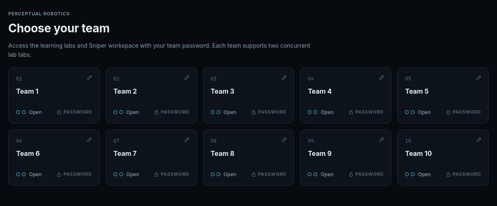
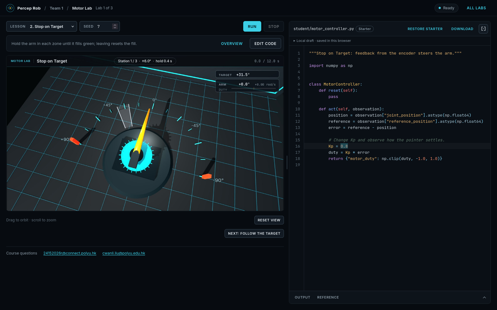
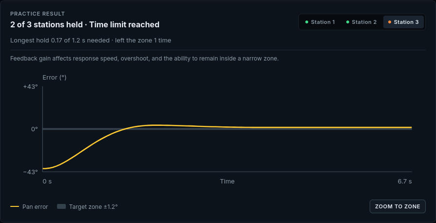
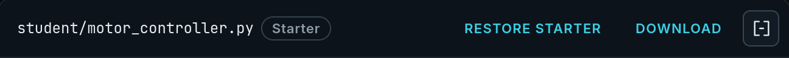

Team access
Use your team password to open the labs and Sniper.
ME41006 · Lab guide
Run a lesson, inspect the result, and save your code.
Connect to the PolyU campus network, open the workspace, and select your team.

Use your team password to open the labs and Sniper.
Two Lab tabs per team.
The simulation and code share one workspace. The example below shows Motor Lab.

Keep the seed fixed to compare revisions on the same scene.
Modify the lab’s student file. Restore starter replaces the current draft after confirmation.
Output shows printed messages and errors. Reference documents the class, observations, actions, and units.

Station 3 requires 1.2 s within ±1.2°. This run held for 0.17 s.
Read the curve against the shaded target zone. Use the same seed to compare the next revision.
Drafts are saved in this browser. Download the Python file to share it with your team.

Use the output and task result to decide what to inspect next.
Confirm that you are connected to the campus network and use Open workspace on the course page. The guides remain available without a simulation session.
Close unused Lab tabs in your team. A browser that has disconnected may hold its slot until the idle timeout expires.
Open Output and inspect the error message and line number. Use Reference to check return keys, array shapes, and units.
Compare the scene, selected result, and response plot. Keep the seed fixed while changing one part of the program, then test other seeds.